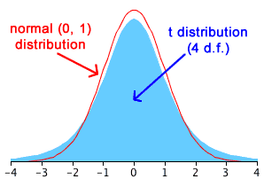

Test statistic if σ is unknown
In practical problems, the value of σ is rarely known so we cannot use

as a test statistic — it cannot be evaluated even when H0 is true. Instead, we must use a closely related type of 'statistical distance' between the sample mean and µ0,

where s is the sample standard deviation. This test statistic no longer has a normal distribution — it has greater spread due to the extra variability that results from estimating s, and has a standard distribution called a t distribution with (n - 1) degrees of freedom.
